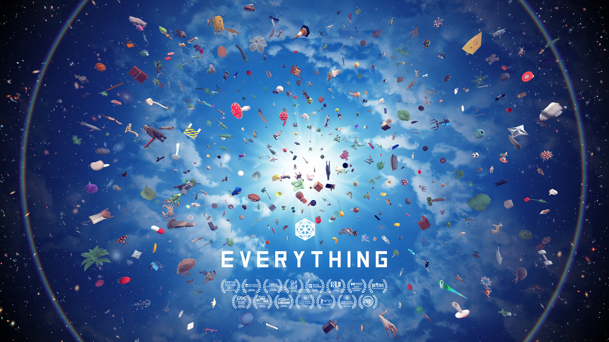

Retrospectiva săptămânii 10-16 iunie 2018
Retrospectiva săptămânii este rubrica duminicală în care trecem în revistă evenimentele săptămânii de pe frontul de gaming: știri şi articole (scrise de alții, bineînțeles, că e mai ușor aşa), industrie, lansări, oferte de jocuri, toate numai bune de savurat la cafeaua de duminică dimineața. (Și la care oricine poate contribui. 1 )
Ştiri
E3
Săptămâna aceasta a fost, după cum ştiţi, dominată de desfăşurarea expoziţiei E3 în perioada 12-14 iunie, perioadă care a fost precedată însă de diverse conferinţe pre-expoziţionale. Aveţi mai jos o scurtă trecere în revistă a evenimentelor:
Jocuri anunţate
The Elder Scrolls VI (Bethesda), Babylon’s Fall (Platinum), Metro Exodus (4A Games), Overcooked 2 (Ghost Town Games), Sable (Shedworks), Control (Remedy), Maneater (Blindside), Just Cause 4 (Avalanche Studios), Assassin’s Creed Odyssey (Ubisoft), Command & Conquer Rivals pentru mobile (EA), My Friend Pedro (Devolver), Starfield (Bethesda), Doom Eternal (Bethesda), Wolfenstein Youngblood (Machine Games), Dying Light 2 (Techland), Gears of War 5 (Microsoft), Devil May Cry 5 (Capcom), Forza Horizon 4 (Microsoft), Sekiro: Shadows Die Twice (From Software), Halo Infinite (343 Industries), Unravel 2 (EA), Sea of Solitude (EA), Jedi: Fallen Order (Respawn), Satisfactory (Coffee Stain), Battletoads (DLaLa Studios), Captain Spirit (Dontnod), Beyond Blue (BBC Studios/E-Line Media)
Sumarul conferinţelor de presă
- EA: Polygon trailers, Polygon ştiri, Ars Technica, Game Informer
- Microsoft: RPS, Polygon trailers, Polygon ştiri, Ars Technica, Game Informer
- Square Enix: Polygon trailers, Polygon ştiri, Ars Technica, Game Informer
- Ubisoft: Ars Technica, RPS (doar jocuri PC), Polygon trailers, Polygon ştiri
- Sony: Polygon trailers, Polyon ştiri, Ars Technica
- Bethesda: Polygon ştiri, Polygon trailers, Ars Technica
- Nintendo: Polygon trailers, Polygon ştiri, Ars Technica
- PC Gaming: Ars Technica, Eurogamer, Polygon ştiri
- Every E3 2018 news story şi Every game at E3 2018 and its PC outlook (PC Gamer)
- Sumarul E3 pe zile:
Alte articole despre E3
- GamesIndustry.biz au publicat o o revistă gratuită de 80 de pagini cu rol de avanpremieră a E3
- E3 2018: The best game trailers (Polygon)
- The 25 best game trailers from E3 2018 (The Verge)
- The 10 biggest stories of E3 2018 (The Verge)
- Fortnite is the biggest and most influential title at E3 2018 | How Fortnite is transforming the gaming industry (The Verge)
- 10 trends we noticed at E3 2018 (PC Gamer)
- The highs and lows of E3 2018 (PC Gamer)
- The Best Open Worlds Of E3 2018 (Game Informer)
- The Best Indie Games Of E3 2018 (Game Informer)
- Eurogamer’s best of E3 2018 (Eurogamer)
- The best moments of E3 2018 (Eurogamer)
- The GamesIndustry.biz E3 Award Winners (GamesIndustry.biz)
- Anunţul Ubisoft că lucrează cu platforma de crowdsourcing HitRecord pentru crearea de assets pentru Beyond Good & Evil 2 stârneşte controverse privind drepturile şi plata artiştilor (exemple: Gamasutra, RPS, Polygon). Fondatorul HitRecord, actorul Joseph Gordon-Levitt, încearcă să explice situaţia.
Cyberpunk 2077
A fost probabil cel mai popular joc de la E3 (cel mai vizionat trailer sigur a fost, după cum zice PC Gamer). În afară de trailer, CD Projekt Red au mai prezentat şi un demo, dar numai jurnaliştilor. Iată câteva preview-uri şi interviuri:
- We watched 50 minutes of uncut Cyberpunk 2077 gameplay and interviewed CD Projekt about it (Eurogamer)
- Cyberpunk 2077’s demo at E3 was a vivid, drug-huffing first-person romp of guns and butts (RPS)
- We Pick Apart The Cyberpunk 2077 E3 Demo (Game Informer)
- Impressions And Details From 50 Minutes Of Gameplay (Game Informer)
- A chat with CD Projekt Red about the romances, flying cars and hacking of Cyberpunk 2077 (RPS)
- Three things Cyberpunk 2077 gets right about the original tabletop RPG (Polygon)
- Cyberpunk 2077’s trailer tried to sneak a bunch of good news past you (Polygon) şi Cyberpunk 2077 Re-Announced (RPG Codex)
- Cyberpunk 2077: Everything we learned from the jam-packed E3 demo (PC Gamer)
- Cyberpunk 2077 interview: “We wanted to test ourselves as a studio” to make a game so different than The Witcher (PC Gamer)
- Cyberpunk 2077 world premiere: 50 minutes of William Gibson-level insanity (Ars Technica)
- First Cyberpunk 2077 gameplay details revealed (RPG Codex)
- E3 2018: Cyberpunk 2077 astounds, but so do the crowds (GamesIndustry.biz)
- Cyberpunk 2077 Is a Violent, Impressive Blend of Deus Ex and The Witcher 3 (Kotaku)
- Avem şi nişte concept art (PC Gamer)
- De urmărit şi discuţiile de pe forumul nostru
Alte știri
- Telltale sunt chemaţi în judecată de fostul CEO (Gamasutra, GamesIndustry.biz )
- Telltale lucrează cu Netflix la două noi proiecte legate de Stranger Things şi Minecraft (RPS, GamesIndustry.biz)
- Steam anunţă schimbări la componentele sociale ale platformei (Gamasutra, Eurogamer, GamesIndustry.biz)
- Valve lansează Steam China (GamesIndustry.biz)
- Epic a bugetat 100 milioane de dolari pentru organizarea de competiţii Fortnite în toată lumea, începând din toamnă (Game Informer)
- Microsoft cumpără câteva studiouri de jocuri: Playground Games (Forza Horizon), Ninja Theory (Hellblade), Undead Labs (State of Decay), Compulsion Games (We Happy Few)
- Se stinge lumina în septembrie pentru jocul LawBreakers. Pentru a îndulci pastila, jocul e gratis de acum până la capătul drumului (Gamasutra)
- Creatorul lui Binding of Isaac, Edmund McMillen, lucrează la un joc multiplayer. Încă nu se cunosc prea multe detalii, dar aparent nu va avea legătură cu Binding of Isaac sau Super Meat Boy. (PC Gamer)
- Pe 11 iunie a intrat în vigoare în SUA abrogarea reglementărilor federale privind neutralitatea internetului. Deşi marii furnizori de internet anunţă că nu au de gând să profite de pe urma eliminării restricţiilor, unele state au luat măsuri şi au început să implementeze propriile legi pentru a reglementa serviciile de internet (Ars Technica)
Articole (critică, dev, design)
- How Prey succeeds in giving players space to tell their own stories (Gamasutra)
- After the Dawn: a mini-retrospective on Cultist Simulator (Gamasutra)
- The sales & design thinking that gave SpyParty a strong launch (Gamasutra)
- (Video) See Grim Fandango’s cast reunite for a live read-through (RPS)
- Finding The Themes (Gamasutra)
- Why Battle Royale Games Like Fortnite Are Everywhere (It’s Not Just Money) (Wired)
- How a tweet brought cult classic Metal Wolf Chaos back to life 15 years later (The Verge)
Made în România
- Benoît Sokal, artistul belgian din spatele jocurilor Amerzone și seriei Syberia, s-a aflat pentru scurtă vreme în România. El a participat ca invitat la Festivalul Internațional de Benzi Desenate de la Sibiu, iar apoi, pe 11 iunie, a susținut o conferinţă la ARCUB, în București, despre benzi desenate şi jocuri. Totodată, a fost și invitatul Mihaelei Dedeoglu în emisiunea Zebra de la Radio RFI România, a cărei înregistrare o găsiți integral pe Facebook (atenție, e în limba franceză).
Anunţuri şi lansări de jocuri
Anunţate
- inXile vor lansa o versiune remasterizată pentru Wasteland 1 în 2019 (RPG Codex)
- Dată de lansare pentru Divinity: Original Sin 2 Definitive Edition: 31 august (RPG Codex)
Lansate
- 9 iunie: Unravel 2 (Origin)
- 11 iunie: Mooncrash, DLC pentru Prey (Steam)
- 12 iunie: Jurassic World Evolution (Steam) un dinopark-management sim de la producătorii lui Planet Coaster
- 12 iunie: Hollow Knight s-a lansat și pe Switch. Posesorii acestei console nu ar trebui să rateze unul dintre cele mai reușite jocuri metroidvania apărute în ultimii ani. Trailerul de lansare pe Switch include și un mic teaser despre viitorul DLC, Gods & Glory.
- 14 iunie: Sky Noon, un shooter multiplayer cu un concept interesant (Steam)
- 15 iunie: LEGO The Incredibles (Steam)
Oferte jocuri
Humble Bundle
Steam
- CroTeam 25th Anniversary Sale - până la finalul weekendului sunt la reducere jocurile din seria Serious Sam și Talos Principle.
- Klei Weekend Sale - până pe 21 iunie sunt la reducere câteva jocuri indie din portofoliul celor de la Klei: Don’t Starve (3,74 euro jocul de bază, 11,22 euro pentru mega pack), Crypt of the Necrodancer (2,99 euro), Invisible Inc. (4,99 euro), Oxygen Not Included (13,79 euro) și altele.
- Alte promoții: Rocketbirds: Hardboiled Chicken (0,99€), Mountain (redus de la 0,99€ la 0,49€), Everything (5,09€), TOXIKK (8,99€), Conarium (7,99€), Kelvin and the Infamous Machine (3,74€), Teleglitch: Die More Edition (3,24€)
- Quake Champions e gratis până pe 18 iunie. Ca să-l păstraţi, trebuie să-l instalaţi şi să jucaţi cel puţin un meci.
gog.com
Pe 18 se termină sale-ul de vară, grăbiți-vă dacă vreți să cumpărați ceva. Iată doar câteva recomandări:
- Jocurile din seria Shadowrun: Shadowrun Returns (2,49 euro), Shadowrun: Dragonfall (2,49 euro), Shadowrun Hong Kong (4,09 euro).
- Colecția Might and Magic I-VI pentru 3,87 euro, sau clasicul Might and Magic VII pentru doar 1,29 euro.
- Cu ocazia prezentării Cyberpunk 2077, gog.com au făcut și o listă cu jocuri cu tematică cyberpunk pe care le puteți cumpăra, să vă fie la îndemână (dintre care Beneath a Steel Sky e încă gratis, dacă nu l-ați luat încă).
De asemenea, XCOM cel nou (primul) e acum și pe gog.com, în formulă completă cu toate DLC-urile (da, inclusiv Enemy Within) și e și la reducere pentru o perioadă scurtă: 5.99 euro.
Fanatical
- Dacă vi-l doreați și nu l-ați prins la una din celelalte 999 de promoții care apar aproape zilnic, aveți acum ocazia să cumpărați Lords of the Fallen Game of the Year Edition cu doar 4,49€
- Un bundle ieftin cu de toate la doar 2€, în care sigur veți găsi cel puțin câteva jocuri interesante. Aveți, printre altele, un JRPG (Ara Fell), un simulator de mașini (GT Legends), o strategie istorică (Grand Ages: Rome), un ”walking simulator” (CAT Interstellar) și Memoranda, un adventure clasic point-and-click, care susține că e ”inspired by author Haruki Murakami’s surreal short stories” (și nici nu arată rău).
Recomandarea săptămânii: Everything

După săptămâna care a trecut, recomandarea evidentă ar fi fost ceva în spiritul Cyberpunk 2077, dar pentru asta lista făcută de gog.com (mai sus) e mai mult decât suficientă, având cyberpunk pentru toate gusturile (iar dacă asta nu e de ajuns, puteți căuta și text adventure-ul CYPHER: Cyberpunk Text Adventure, care a avut și un review mai mult decât pozitiv în Level în 2011).
În schimb, recomandarea acestei săptămâni e ceva diferit, nu doar de genul cyberpunk, dar și de orice altceva ați mai jucat până acum.
Everything este un joc greu și ușor de descris în același timp: poți fi orice. Stați, nu cred că ați înțeles prea bine. E un joc în care poți fi ORICE: o plantă, un animal, un continent, un atom, un băț de chibrit, o pasăre, o clădire. Orice vezi, poți fi tu. Jocul e creația artistului David O’Reilly, cel care a creat și Mountain, și despre care veți afla mai multe dacă deschideți linkurile de mai jos. Aveți aici un filmuleţ de 10 minute, cu secvențe din joc, cu care artistul a participat și la festivalul de film de la Berlin în 2017
- Cumpără: e la reducere pe Steam pentru doar 5 euro.
- Câteva review-uri: RPS, Polygon, Wired, The Guardian
- Articole interesante:
- The Video Game That Claims Everything Is Connected
- Road to the IGF: David O’Reilly’s Everything
- How Everything conjures infinity with camera tricks
- Everything creator David OReilly explains how artists can forge their own path (video)
- A Panda? An Office Building? A Galaxy? You Can Become Literally Anything in this F*cking Incredible Video Game
- Art Or Game? Double Fine On Marketing David O’Reilly’s ‘Everything’
- From Atoms to Entire Galaxies: “Everything”
- A Short Conversation About ‘Everything’ with Creator David OReilly
- Dacă ai citit vreun articol sau vreo știre interesantă și crezi că merită inclusă în retrospectiva săptămânii, te așteptăm cu recomandarea ta pe forum, pe unul din topicurile dedicate: Știri, Articole, Gaming România, Oferte jocuri [return]